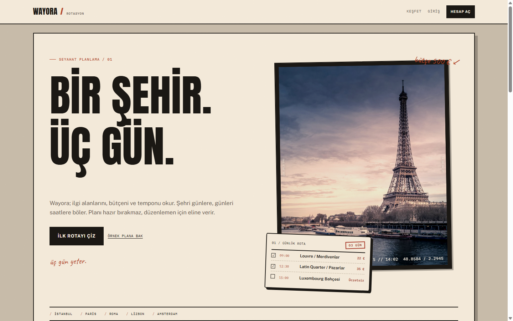
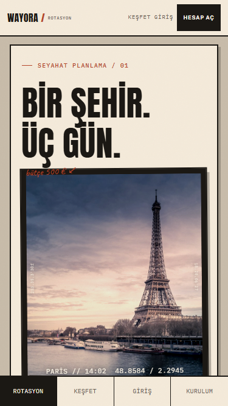
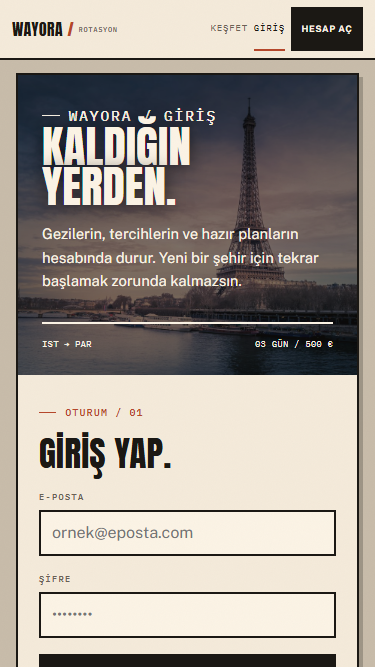
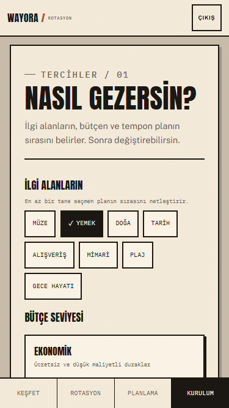
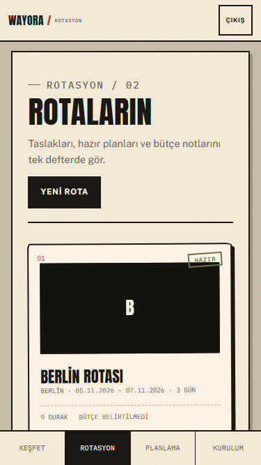
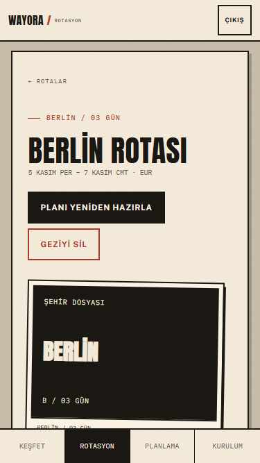
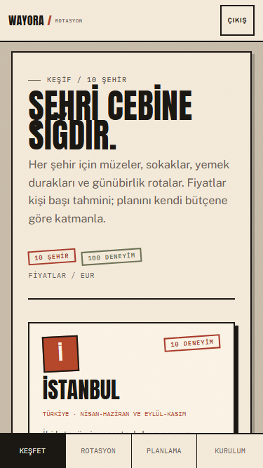
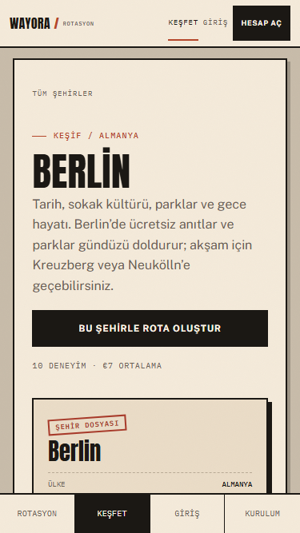
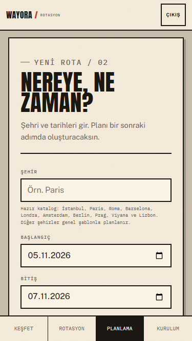

WAYORA / TASARIM DENETİMİ / 29 EKİM 2026
Wayora'nın bugünkü arayüzü, güçlü bir seyahat dergisi estetiğine sahip. Ancak ürün kullanımı açısından aynı netlikte değil. Bu dosya, mevcut ekranları ve tasarım kararlarını ürün gözüyle değerlendiriyor.
Ürün arayüzü değerlendirmesi
01 / KISA HÜKÜM
Tasarım kötü olduğu için değil, ürünle aynı şeyi anlatmadığı için zorlanıyor. Wayora keşfedilmesi, karşılaştırılması ve plana dönüşmesi gereken bir ürün; mevcut ekranlar ise önce bir poster gibi okunuyor.
Fiyat, puan, süre ve eylemler küçük etiketlerde kayboluyor.
Damga, doku, dönüklük ve el yazısı aynı ekranda fazla yer kaplıyor.
Seyahat ürününde fotoğraf ana unsurken, keşif kartlarında fotoğraf yok.
02 / MEVCUT EKRANLAR

Güçlü bir poster etkisi var. Ancak el yazısı “bütçe 500 €” notu fotoğrafın arkasında kalıyor; sağ üstte kırpılmış görünüyor. CTA ve rota kartı aynı anda yarışıyor.

İlk ekranda marka ve büyük başlık var; ürün değeri ve CTA daha aşağıda kalıyor.
03 / MEVCUT EKRANLAR

Mobilde kullanıcı önce 370 px'lik posteri görüyor. Form ve giriş butonu ekranın altına düşüyor. İlk eylem önce gelmeli.

Seçenekler var ama kaç adım kaldığı belli değil. Alttaki menü içerikle birleşiyor; “Devam” eylemi belirgin değil.
04 / MEVCUT EKRANLAR

Berlin için siyah “B” plakası büyük bir görsel gibi davranıyor; “HAZIR” damgası kart görselinin üzerinde kalıyor. Yaklaşan/geçmiş ayrımı yok.

Plan ilk ekranda görünmüyor. Başlık, iki büyük aksiyon ve şehir plakası planın önüne geçiyor. Kullanıcı asıl içeriği görmek için kaydırmak zorunda.
05 / MEVCUT EKRANLAR

Tipografik kartlar karakterli ama fotoğraf yok. Şehirler arasında görsel bir seçim yapmak zorlaşıyor; fiyat ve puan kartın içinde küçük kalıyor.

Filtreler hero'nun altında. Deneyim kartları iki sütunda sıkışıyor; “plana ekle” gibi birincil eylem yok.
06 / MEVCUT EKRANLAR

Şehir ipucu artık 10 şehri listeliyor. Form hâlâ uzun; tarih, bütçe, para birimi, notlar ve iki ayrı submit butonu aynı ekranda. Kullanıcı için tek bir sonraki adım daha net olmalı.
07 / SAYFA SAYFA
| Sayfa | Bugün | Öneri |
|---|---|---|
| Landing | Dev hero, defter, fiş, 3 şehir, tekrar eden CTA'lar | Tek değer önerisi, arama, 6-10 şehir, kısa “nasıl çalışır”, tek CTA |
| Auth | Poster önce, form sonra; mobilde form aşağıda | Form odaklı kart; küçük marka bandı; mobilde poster yok |
| Onboarding | Çipler ve seçenek kartları; ilerleme yok | 2-3 adım, ilerleme çubuğu, canlı özet, sabit devam butonu |
| Rotalar | Döndürülmüş bilet kartları; aksiyonlar iç içe | Dashboard, yaklaşan/geçmiş, kapak fotoğrafı, durum etiketi, menü |
| Yeni rota | Uzun form + taslak bileti; iki submit butonu | Şehir/tarih, bütçe/tercih, özet adımları; tek CTA |
| Rota detayı | Büyük başlık ve plaka; plan aşağıda | Kompakt başlık, tarih/bütçe, gün sekmeleri, zaman çizelgesi, sabit ekle |
| Keşfet | Tipografik şehir kartları; arama yok | Fotoğraflı şehir kartları, arama, kategori, ortalama fiyat |
| Şehir detayı | Filtreler aşağıda; deneyimler sıkışık | Sticky filtre, fotoğraflı deneyim kartı, puan/fiyat/süre, net eylem |
08 / GLOBAL ELEMENTLER
Masaüstünde Keşfet, Rotalar, Tercihler, kullanıcı, CTA ve çıkış aynı satırda. Mobilde header yalnızca çıkışa indirgeniyor; alt menüde 4 sekme var fakat etiketler çok küçük. İkon yok.
Öneri: masaüstünde 4 net bağlantı, mobilde sade logo + profil; alt menüde 11-12 px etiket ve ince çizgi ikon.
Anton güçlü; her başlıkta kullanılınca poster etkisi yaratıyor. IBM Plex Mono 8-10 px'e kadar küçülüyor. Krem üzerinde küçük kahve tonları zorlanıyor. Otomatik koyu tema marka kontrolünü kaybettiriyor.
Öneri: Public Sans 16 px gövde; mono sadece fiyat/süre; Anton sadece pazarlama; koyu tema ayrı tasarlanana kadar kapalı.
Döndürülmüş kartlar, organik köşeler, damgalar ve gölgeler aynı anda kullanılıyor. Bu, ürün kartlarında hizalama ve tarama hızını bozuyor. Öneri: ürün yüzeylerinde düz hizalı, 12 px radius, ince çizgi ve yumuşak gölge; damga/dönüklük sadece landing gibi duygusal yüzeylerde.
WAYORA markası, terracotta aksan, sıcak zemin, iyi fotoğraf.
Tane dokusu, damga, el yazısı, dönüklük, aşırı büyük başlık.
Arama, gerçek fotoğraf, net fiyat/puan, sticky filtre, tek CTA.
09 / ÖNERİLEN YÖN
Wayora'nın keşif tarafı GetYourGuide/Airbnb Experiences gibi fotoğraf, fiyat, puan ve süreyle hızlı karar verdirmeli. Planlama tarafı ise sakin, net ve düzenlenebilir bir çalışma alanı olmalı. İki taraf aynı görsel dili paylaşmalı.
10 / KARAR
Bu dosya bir “beğendim/beğenmedim” tartışması değil. Mevcut tasarımın ne yaptığını ve ürün hedefiyle nerede ayrıştığını gösteriyor. Yeni yön onaylandığında önce tek sayfalık tasarım sistemi, sonra Keşfet ve giriş ekranları yeniden kurulmalı.